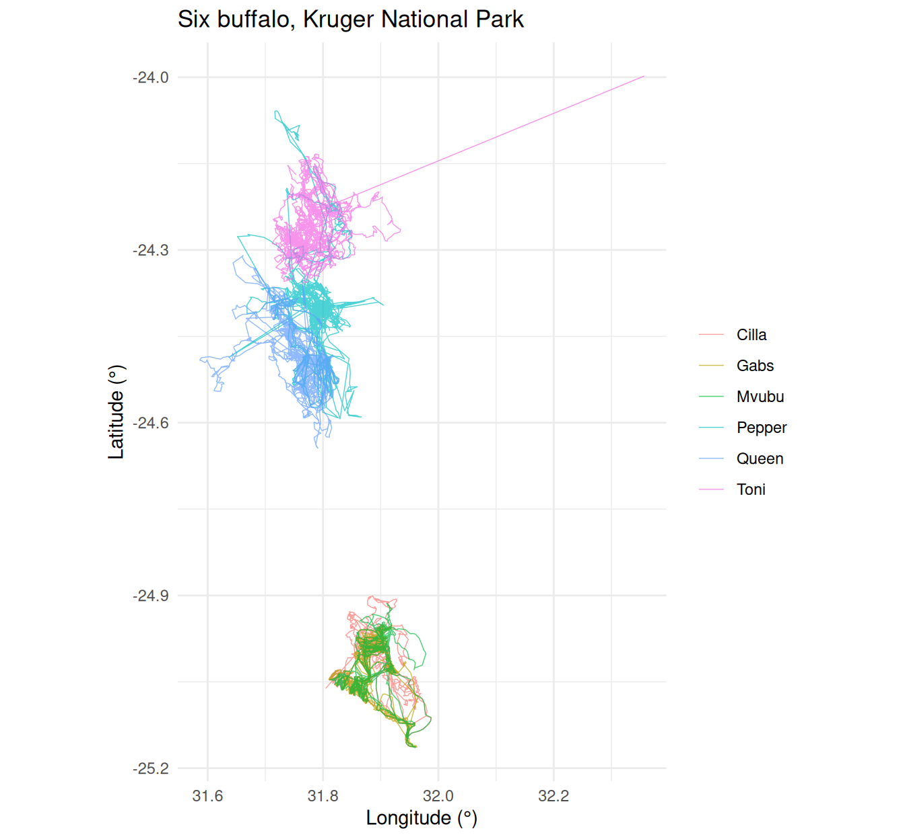
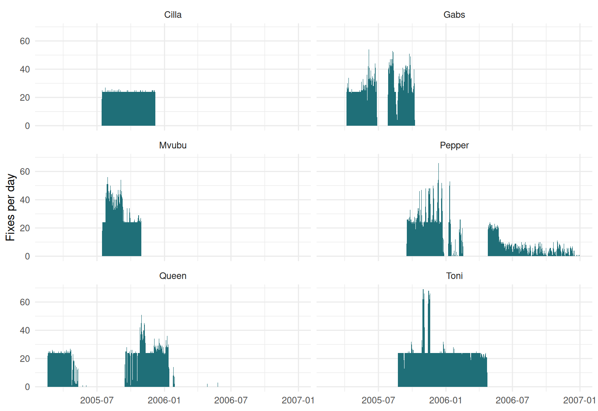
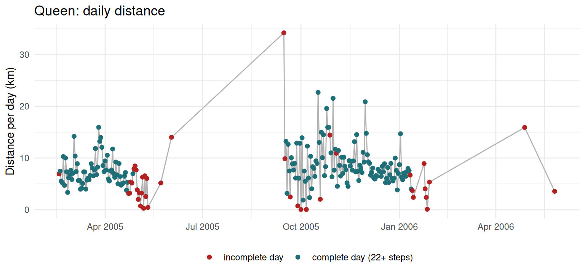

need <- c("sf", "terra", "amt", "adehabitatLT", "adehabitatHR", "ctmm",
"momentuHMM", "bcpa", "circular", "tidyverse")
for (p in need) {
ok <- requireNamespace(p, quietly = TRUE)
cat(sprintf("%-13s %s\n", p, if (ok) as.character(packageVersion(p)) else "** MISSING **"))
}Practical 1 — First contact with a GPS track
Session 1 · Foundations
Goals. Find your way around the course project; load a real Movebank GPS track; plot it; count fixes per day; compute daily distances; find the gaps.
Time: ~60 minutes. Packages: readr, dplyr, lubridate, ggplot2.
Task 0 — Orientation
Open animtrack-2627.Rproj in RStudio. Everything in the course assumes you work inside this project, so that paths like data/buffalo_kruger.csv.gz resolve without editing anything.
animtrack-2627/
├── data/ ← the tracks and rasters we use all course
├── classes/ ← one folder per session: slides.qmd + exercise.qmd
├── R/ ← small helper scripts (simulators, Session 5 onwards)
└── docs/ ← the rendered website — do not edit by handCheck that your installation works:
Anything MISSING? Go back to the setup page now.
Task 1 — Load the track
Two things to notice. read_csv() keeps Movebank’s hyphenated column names, so you need backticks to refer to them. And it has already parsed timestamp as a date-time:
Tidy it into the four columns every movement analysis needs:
track <- raw |>
transmute(
id = `individual-local-identifier`,
t = timestamp,
lon = `location-long`,
lat = `location-lat`
) |>
filter(!is.na(lon), !is.na(lat)) |>
arrange(id, t)
track
#> # A tibble: 28,410 × 4
#> id t lon lat
#> <chr> <dttm> <dbl> <dbl>
#> 1 Cilla 2005-07-14 04:35:00 31.8 -25.1
#> 2 Cilla 2005-07-14 05:35:00 31.9 -25.0
#> 3 Cilla 2005-07-14 07:35:00 31.9 -24.9
#> 4 Cilla 2005-07-14 08:34:00 31.9 -24.9
#> 5 Cilla 2005-07-14 09:35:00 31.9 -25.0
#> 6 Cilla 2005-07-14 10:35:00 31.9 -24.9
#> 7 Cilla 2005-07-14 11:34:00 31.8 -24.9
#> 8 Cilla 2005-07-14 12:35:00 31.8 -24.9
#> 9 Cilla 2005-07-14 13:34:00 31.8 -24.9
#> 10 Cilla 2005-07-14 14:35:00 31.9 -24.9
#> # ℹ 28,400 more rows
WarningAlways know your time zone
read_csv() assumed UTC, which is right for Movebank. A CSV from another source may be in local time; parse it explicitly with ymd_hms(x, tz = "Africa/Johannesburg"), and convert to UTC with with_tz(). Mixing the two is the commonest silent error in movement analysis.
Your turn
1a. How many animals, and how many fixes each? 1b. Over what period?
NoteSolution
track |>
group_by(id) |>
summarise(fixes = n(), from = min(t), to = max(t),
days = round(as.numeric(difftime(max(t), min(t), units = "days"))),
.groups = "drop")
#> # A tibble: 6 × 5
#> id fixes from to days
#> <chr> <int> <dttm> <dttm> <dbl>
#> 1 Cilla 3556 2005-07-14 04:35:00 2005-12-07 22:16:00 147
#> 2 Gabs 4831 2005-04-05 05:56:00 2005-10-08 03:57:00 186
#> 3 Mvubu 3491 2005-07-15 05:02:00 2005-10-29 18:49:00 107
#> 4 Pepper 5163 2005-09-16 15:18:00 2006-12-31 14:34:00 471
#> 5 Queen 4997 2005-02-17 05:05:00 2006-05-26 04:16:00 463
#> 6 Toni 6372 2005-08-23 06:35:00 2006-04-23 13:09:00 243Six buffalo, followed for very different lengths of time. Any summary that pools them is dominated by whoever contributed most fixes.
Task 2 — Plot it
ggplot(track, aes(lon, lat, colour = id)) +
geom_path(linewidth = 0.25, alpha = 0.7) +
coord_equal() +
labs(x = "Longitude (°)", y = "Latitude (°)", colour = NULL,
title = "Six buffalo, Kruger National Park") +
theme_minimal()
ImportantThis plot is subtly wrong
coord_equal() makes one degree of longitude as long as one degree of latitude. At 24.5°S a degree of longitude is only 101 km, against ~111 km for latitude, so the map is stretched east–west by about 10%. At Kruger’s latitude that is tolerable; for a track spanning 7°N to 54°N it is not. Session 2 fixes this properly with coordinate reference systems.
Task 3 — Fixes per day
A collar is programmed to attempt a fix on a schedule. Counting fixes per day tells you how well it kept to it.
per_day <- track |>
mutate(day = as_date(t)) |>
count(id, day, name = "fixes")
per_day |>
group_by(id) |>
summarise(median_per_day = median(fixes), max_per_day = max(fixes),
.groups = "drop")
#> # A tibble: 6 × 3
#> id median_per_day max_per_day
#> <chr> <dbl> <int>
#> 1 Cilla 24 27
#> 2 Gabs 29 54
#> 3 Mvubu 27 56
#> 4 Pepper 9 66
#> 5 Queen 24 51
#> 6 Toni 24 69Your turn
3a. Plot fixes per day over time for each animal. 3b. Some days have more fixes than the schedule allows. Why?
NoteSolution
ggplot(per_day, aes(day, fixes)) +
geom_col(fill = "#1f6f78", width = 1) +
facet_wrap(~ id, ncol = 2) +
labs(x = NULL, y = "Fixes per day") +
theme_minimal()
The programmed schedule is roughly 24 per day. Days far above it are duplicates: the collar re-transmitted fixes it had already sent.
Thousands of repeated timestamps. We remove them properly in Session 3; for now note that you only find this by looking.
Task 4 — Daily distance
Straight-line distance between consecutive fixes, summed per day. Because our coordinates are in degrees we need a great-circle distance. Here is the haversine formula written out — Session 2 replaces it with sf, which does this properly on the ellipsoid.
haversine_m <- function(lon1, lat1, lon2, lat2, r = 6371008.8) {
to_rad <- pi / 180
dlat <- (lat2 - lat1) * to_rad
dlon <- (lon2 - lon1) * to_rad
a <- sin(dlat / 2)^2 + cos(lat1 * to_rad) * cos(lat2 * to_rad) * sin(dlon / 2)^2
2 * r * asin(sqrt(a))
}
steps <- track |>
distinct(id, t, .keep_all = TRUE) |> # drop duplicates first
group_by(id) |>
mutate(dist_m = haversine_m(lag(lon), lag(lat), lon, lat),
dt_h = as.numeric(difftime(t, lag(t), units = "hours"))) |>
ungroup() |>
filter(!is.na(dist_m))
daily <- steps |>
mutate(day = as_date(t)) |>
group_by(id, day) |>
summarise(km = sum(dist_m) / 1000, steps = n(), .groups = "drop")
daily |>
group_by(id) |>
summarise(median_km_per_day = round(median(km), 1), .groups = "drop")
#> # A tibble: 6 × 2
#> id median_km_per_day
#> <chr> <dbl>
#> 1 Cilla 5.9
#> 2 Gabs 5.3
#> 3 Mvubu 5.6
#> 4 Pepper 4.6
#> 5 Queen 7.3
#> 6 Toni 5.9Your turn
4a. Plot daily distance over time for one animal. 4b. Is a day with 6 fixes comparable to a day with 24?
NoteSolution
Queen’s collar was patchy, which makes her the instructive case:
daily |>
filter(id == "Queen") |>
ggplot(aes(day, km)) +
geom_line(colour = "grey70") +
geom_point(aes(colour = steps >= 22), size = 1.6) +
scale_colour_manual(values = c(`TRUE` = "#1f6f78", `FALSE` = "firebrick"),
labels = c(`TRUE` = "complete day (22+ steps)",
`FALSE` = "incomplete day")) +
labs(x = NULL, y = "Distance per day (km)", colour = NULL,
title = "Queen: daily distance") +
theme_minimal() + theme(legend.position = "bottom")
No, they are not comparable. Summed distance is a lower bound that depends on how many fixes you had — the modifiable temporal unit problem from the slides:
daily |>
filter(id == "Queen") |>
mutate(steps_that_day = cut(steps, c(0, 6, 12, 21, Inf),
labels = c("1–6", "7–12", "13–21", "22+"))) |>
group_by(steps_that_day) |>
summarise(days = n(), median_km = round(median(km), 1))
#> # A tibble: 4 × 3
#> steps_that_day days median_km
#> <fct> <int> <dbl>
#> 1 1–6 21 2.5
#> 2 7–12 7 3.7
#> 3 13–21 12 7.3
#> 4 22+ 175 7.5Days with only a handful of fixes come out at a third of the distance of complete days — for a reason that has nothing to do with the buffalo. Before comparing days, keep only complete ones or, better, resample to a regular interval (Session 3).
Task 5 — Find the gaps
gaps <- steps |>
filter(dt_h > 3) |>
arrange(desc(dt_h)) |>
transmute(id, from = t - dhours(dt_h), to = t, gap_days = round(dt_h / 24, 1))
gaps |> slice_head(n = 8)
#> # A tibble: 8 × 4
#> id from to gap_days
#> <chr> <dttm> <dttm> <dbl>
#> 1 Queen 2005-06-02 03:43:00 2005-09-15 06:31:00 105.
#> 2 Queen 2006-01-29 06:05:00 2006-04-28 18:52:00 89.5
#> 3 Pepper 2006-02-17 10:08:00 2006-04-25 05:09:00 66.8
#> 4 Gabs 2005-06-27 03:45:00 2005-07-27 07:06:00 30.1
#> 5 Queen 2006-04-28 18:52:00 2006-05-26 02:16:00 27.3
#> 6 Pepper 2005-12-27 02:23:00 2006-01-07 13:45:00 11.5
#> 7 Queen 2005-05-11 14:53:00 2005-05-23 01:50:00 11.5
#> 8 Queen 2006-01-14 07:16:00 2006-01-24 15:25:00 10.3
gaps |> count(id, name = "gaps_over_3h")
#> # A tibble: 5 × 2
#> id gaps_over_3h
#> <chr> <int>
#> 1 Gabs 15
#> 2 Mvubu 2
#> 3 Pepper 391
#> 4 Queen 51
#> 5 Toni 5Your turn
5a. Visualise the gaps as a timeline for all animals. 5b. Name three biological or technical reasons for a long gap.
NoteSolution
ggplot(steps, aes(t, id)) +
geom_point(shape = "|", size = 3, alpha = 0.15, colour = "#1f6f78") +
geom_segment(data = gaps |> filter(gap_days >= 1),
aes(x = from, xend = to, y = id, yend = id),
colour = "firebrick", linewidth = 2) +
labs(x = NULL, y = NULL, title = "Fixes (teal) and gaps longer than a day (red)") +
theme_minimal()
Common causes of long gaps:
- Battery — schedules that deliberately pause, or a collar running flat
- Habitat — dense canopy, gorges and burrows block the satellites
- Collar orientation — an animal lying on the antenna
- Data transfer — the data exist on the collar but were never downloaded
- Mortality or drop-off — the collar keeps reporting the same place, or stops
The first three are the ones that bias analyses: they are not random, they depend on where the animal is and what it is doing.
To hand in
TipWeekly submission
A single figure: daily distance over time for one buffalo other than Queen, with incomplete days visibly distinguished. One sentence under it explaining why incomplete days had to be distinguished. Submit the .qmd that produces it.
Self-check
You compute diff(t) on a data frame you forgot to sort by time. What do you get?
A collar programmed for hourly fixes returns 14,000 fixes over exactly two years. Roughly what was the fix success rate?
Two years of hourly attempts is 2 × 365 × 24 ≈ 17,520. 14,000 / 17,520 ≈ 80%, a fairly typical figure for a large mammal in mixed habitat. And the 20% that failed is not noise if failures concentrate in closed habitat.
Before Session 2
- Make sure
library(sf)andlibrary(terra)both load. - Skim Geocomputation with R, chapter 2.